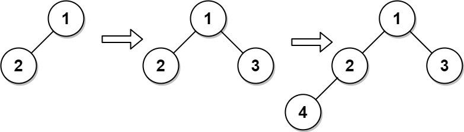

919. 完全二叉树插入器
本页目录
| 题目信息 | 内容 |
|---|---|
| 难度 | 中等 |
| 核心模式 | BFS 维护「待补孩子」的候选父节点队列 |
| 时间复杂度 | 构造 O(n)，单次 insert O(1) 均摊 |
| 空间复杂度 | O(n) |
题目与约束
完全二叉树 是每一层（除最后一层外）都是完全填充（即，节点数达到最大）的，并且所有的节点都尽可能地集中在左侧。
设计一种算法，将一个新节点插入到一棵完全二叉树中，并在插入后保持其完整。
实现 CBTInserter 类:
-
CBTInserter(TreeNode root)使用头节点为root的给定树初始化该数据结构； -
CBTInserter.insert(int v)向树中插入一个值为Node.val == val的新节点TreeNode。使树保持完全二叉树的状态，并返回插入节点TreeNode的父节点的值； -
CBTInserter.get_root()将返回树的头节点。
示例 1：

<strong>输入</strong>
["CBTInserter", "insert", "insert", "get_root"]
[[[1, 2]], [3], [4], []]
<strong>输出</strong>
[null, 1, 2, [1, 2, 3, 4]]
<strong>解释</strong>
CBTInserter cBTInserter = new CBTInserter([1, 2]);
cBTInserter.insert(3); // 返回 1
cBTInserter.insert(4); // 返回 2
cBTInserter.get_root(); // 返回 [1, 2, 3, 4]
提示：
-
树中节点数量范围为
[1, 1000] -
0 <= Node.val <= 5000 -
root是完全二叉树 -
0 <= val <= 5000 -
每个测试用例最多调用
insert和get_root操作104次
核心不变量
完全二叉树按层序编号，新节点永远接在「层序中第一个还缺孩子」的节点上；因此只需用一个先进先出的队列保存所有「孩子未满」的节点，队首就是本次插入的父节点。
完整推导
思路推导
-
直觉与痛点：完全二叉树的插入位置是唯一的——永远填在层序第一个「左孩子或右孩子为空」的节点上。暴力做法每次插入都重新 BFS 找位置，单次 O(n)，多次调用就退化。
-
提前保存候选：能不能把「还缺孩子」的节点事先收集好？可以。构造时 BFS 遍历整棵树，凡是
left或right为空的节点都按层序压入队列candidates。这个队列的队首，就是下一个应该被填充孩子的位置。 -
insert 的两种情形： - 队首
parent.left为空 → 新节点挂到左孩子，parent仍留在队列（它还能接右孩子）。 - 队首parent.left不为空（说明右孩子必空）→ 新节点挂到右孩子，此时parent孩子已满，把它弹出队列。 -
新节点入队：刚插入的节点没有任何孩子，天然是「缺孩子」的候选，压入队尾。返回
parent.val即可。 -
小例子：
root = [1,2]（1的左孩子是2）。BFS 从根1开始，先访问1（有左无右，是候选）再访问2（无孩子，是候选），队列为[1, 2]。insert(3)：队首1左孩子非空 → 挂到右孩子，1已满出队，返回1；insert(4)：队首变为2，左孩子为空 → 挂到左孩子，返回2。最终树为[1,2,3,4]，与示例输出一致。
Java 实现（CBTInserter 构造 + insert + get_root）
import java.util.ArrayDeque;
import java.util.Deque;
import java.util.LinkedList;
import java.util.Queue;
/**
* Definition for a binary tree node.
* public class TreeNode {
* int val;
* TreeNode left;
* TreeNode right;
* TreeNode() {}
* TreeNode(int val) { this.val = val; }
* TreeNode(int val, TreeNode left, TreeNode right) {
* this.val = val;
* this.left = left;
* this.right = right;
* }
* }
*/
class CBTInserter {
private final TreeNode root;
// 按层序保存「孩子未满」的节点，队首即下一个父节点
private final Deque<TreeNode> candidates;
public CBTInserter(TreeNode root) {
this.root = root;
this.candidates = new ArrayDeque<>();
Queue<TreeNode> queue = new LinkedList<>();
queue.offer(root);
while (!queue.isEmpty()) {
TreeNode node = queue.poll();
if (node.left != null) queue.offer(node.left);
if (node.right != null) queue.offer(node.right);
// 至少缺一个孩子，作为候选父节点
if (node.left == null || node.right == null) {
candidates.offerLast(node);
}
}
}
public int insert(int val) {
TreeNode newNode = new TreeNode(val);
TreeNode parent = candidates.peekFirst();
if (parent.left == null) {
parent.left = newNode; // 补左孩子，parent 仍留在队列
} else {
parent.right = newNode; // 补右孩子，parent 已满，出队
candidates.pollFirst();
}
candidates.offerLast(newNode); // 新节点还缺孩子
return parent.val;
}
public TreeNode get_root() {
return root;
}
}
复杂度
- 时间：构造函数 BFS 遍历 O(n)；每次
insert为 O(1)（队列操作均摊常数）；get_root为 O(1)。 - 空间：O(n)，
candidates队列最多缓存全部节点，BFS 队列同为 O(n)。
易错点与扩展（面试高频考点）
- 队首出队时机：只有当父节点的右孩子也被填上（即原来左孩子非空）时才
pollFirst；补左孩子时父节点仍可接右孩子，不能提前出队。 - 候选队列的顺序：必须严格按层序（BFS）收集，否则插到的位置会破坏「尽可能靠左」的完全二叉树性质。
- 新节点也要入队：插入的节点没有孩子，属于下一轮的候选父节点，漏掉它会导致后续插入找不到正确父节点。
- 返回值是父节点的值：不是新节点的值，也不是父节点本身。
- 替代思路：也可用「节点总数 n 的二进制表示」来定位第 n+1 个节点的父节点路径（层序按二进制导航），无需维护队列，但要处理下标与位运算，面试中队列法更不易写错。
力扣原题
C++ 实现
/**
* Definition for a binary tree node.
* struct TreeNode {
* int val;
* TreeNode *left;
* TreeNode *right;
* TreeNode() : val(0), left(nullptr), right(nullptr) {}
* TreeNode(int x) : val(x), left(nullptr), right(nullptr) {}
* TreeNode(int x, TreeNode *left, TreeNode *right) : val(x), left(left), right(right) {}
* };
*/
class CBTInserter {
TreeNode* root;
std::queue<TreeNode*> candidates; // 孩子未满的节点，按层序
public:
CBTInserter(TreeNode* root) {
this->root = root;
std::queue<TreeNode*> q;
q.push(root);
while (!q.empty()) {
TreeNode* node = q.front();
q.pop();
if (node->left) q.push(node->left);
if (node->right) q.push(node->right);
if (!node->left || !node->right) {
candidates.push(node);
}
}
}
int insert(int val) {
TreeNode* node = new TreeNode(val);
TreeNode* parent = candidates.front();
if (!parent->left) {
parent->left = node; // 补左孩子
} else {
parent->right = node; // 补右孩子，父节点已满
candidates.pop();
}
candidates.push(node);
return parent->val;
}
TreeNode* get_root() {
return root;
}
};
Python 实现
# Definition for a binary tree node.
# class TreeNode:
# def __init__(self, val=0, left=None, right=None):
# self.val = val
# self.left = left
# self.right = right
from collections import deque
class CBTInserter:
def __init__(self, root: Optional[TreeNode]):
self.root = root
self.candidates = deque()
q = deque([root])
while q:
node = q.popleft()
if node.left:
q.append(node.left)
if node.right:
q.append(node.right)
if not node.left or not node.right:
self.candidates.append(node)
def insert(self, val: int) -> int:
node = TreeNode(val)
parent = self.candidates[0]
if not parent.left:
parent.left = node # 补左孩子
else:
parent.right = node # 补右孩子，父节点已满
self.candidates.popleft()
self.candidates.append(node) # 新节点还缺孩子
return parent.val
def get_root(self) -> Optional[TreeNode]:
return self.root